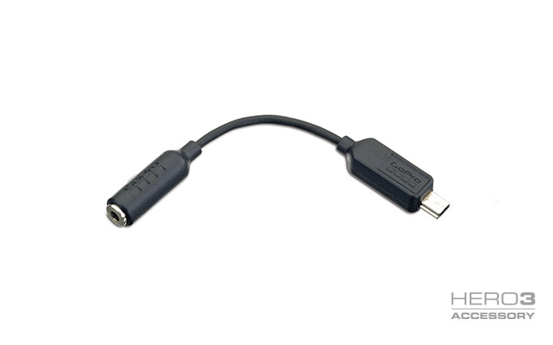
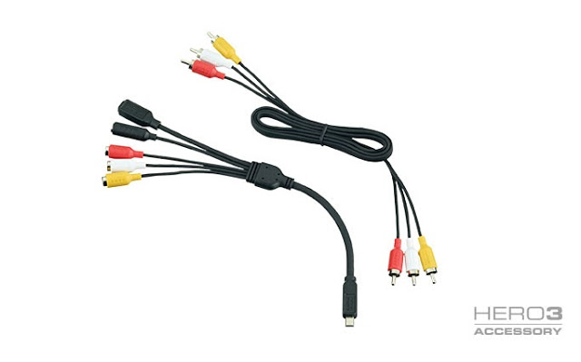
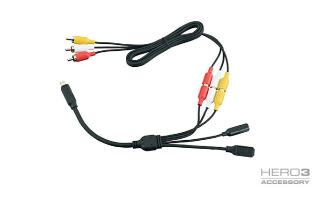
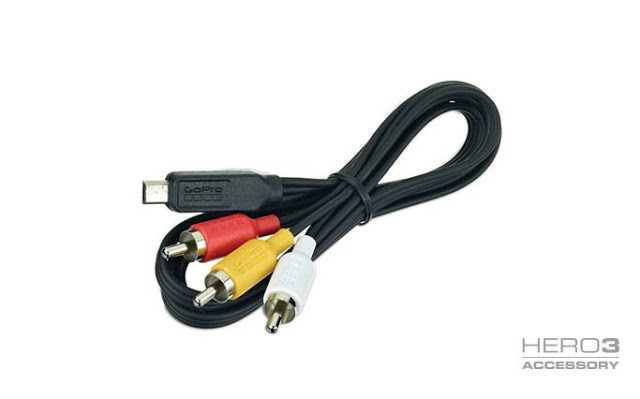
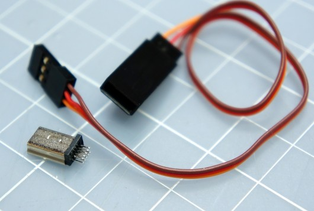
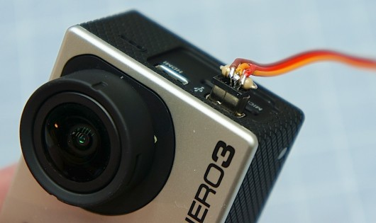

Programming, robotics, traveling
Вчера я приобрел камеру GoPro Hero 3. Буквально неделю назад я и не знал, о том что usb-порт этой камеры такой “замудрённый”. В интернете довольно много информации о нём и мне хотелось бы структурированно выложить её здесь в виде памятки.
Функции, которые имеет usb-разъём GoPro Hero 3:
Для подключения к этому разъёму существует несколько готовых решений переходников от производителя камеры, а также альтернативные.

Данный переходник позволяет подключить к вашей камере внешний микрофон, и всё бы ничего, если бы не цена в $19.99, а в России аж 1190 рублей и это за два разъёма при цене каждого максимум 90 рублей (≈$3).



У этого переходника тоже довольно высокая цена в $19.99, а также большой размер и вес для применения его на беспилотном аппарате.
Все решения довольно дороги и громоздки для использования их на беспилотнике.
В блоге rcexplorer.se довольно хорошо демонстрируется какие выводы за что отвечают. Также статья содержит ссылку на покупку 10-пинового разъёма.
Приведу несколько фото из этого блога:


А также распиновку порта:
Настоятельно советую посетить русскоязычный форум посвященный GoPro.